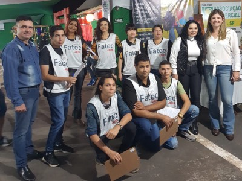
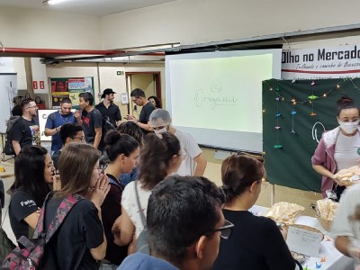
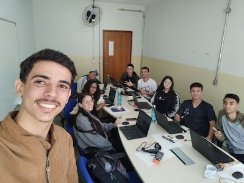
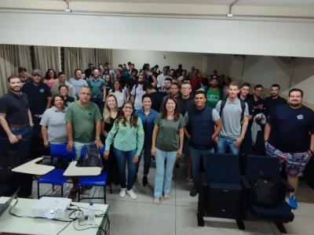
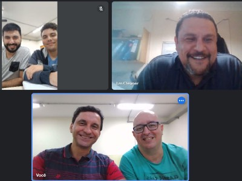
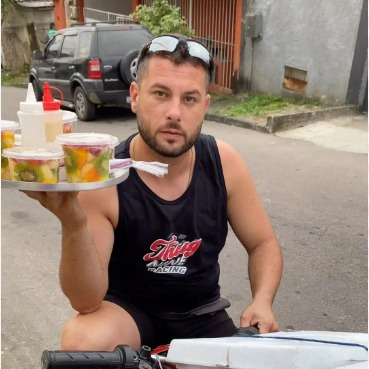
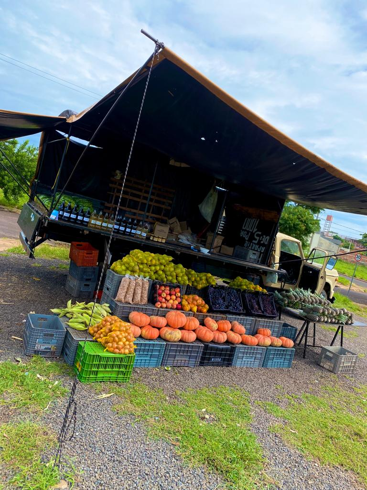

(17) 3621-6911 e 3632-2239
(17) 99676-2867
fatecjales@fatecjales.edu.br
PRINCIPAL
NOTÍCIAS
CURSOS
COORDENADORES
NOTICIAS RECENTES!

Fatec realiza pesquisa de opinião do público da Festa do Peão de Urânia.
Fatec Jales News chega a sua 8ª edição.

Fenit: transformando ideias em grandes negócios.

Programa inovador de ensino AMS fortalece parceria com empresas de TI.

Estreitando laços: BP Bunge fala sobre estágio e mercado de trabalho a alunos de Agronegócio.

Parceria internacional: curso de ADS da Fatec Jales desenvolve software para empresas do Reino Unido e EUA.

Conheça o entregador de saladas mais famoso do mundo!

A barraca de frutas parceira da Fatec Jales!